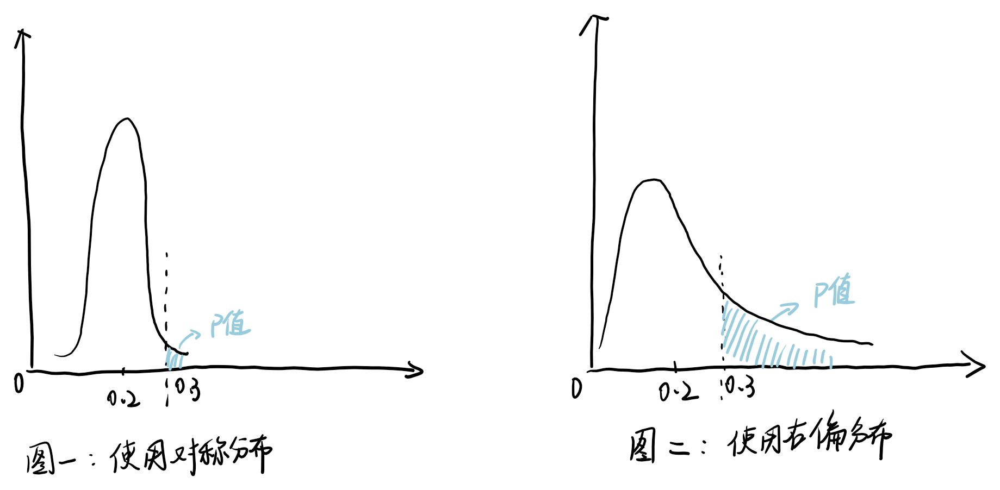

学习一下 AB Testing
求职这段时间，发现并不是所有公司的 JD 中都出现了 AB Testing. AB Testing 的适用范围其实并不大，通常用在产品设计上，而不是定价策略、销售策略等，因为后者风险高，且违背了公平性。然而如果只是对比设计方案，人的决策不一定会输给 AB Testing.而且很多测试做出来，两个方案之间差距可能并不显著，就算显著，结论也有着局限性，于是最后的决策又变成一个主观问题。不少文章里会提到谷歌、字节对 AB Testing 的推崇，但我觉得这两家公司或许只是幸存者偏差（谷歌甚至可能只想卖他的 Analytics）。有很多公司不那么 testing-driven，也做得很好；相对的也有很多公司不停地做 AB Testing，却没有达成增长。
但不能否认它的用处（不然我要失业了）。我倾向于认为 AB Testing 有做得好和做得差的区别，做得差不如不做。从上游的策略制定、实验设计，到下游的假设检验，每个部分都有它的逻辑。从重要性来看，我个人认为实验设计（做一个严谨可靠的实验）排第一，策略制定（如何组合实验，来辅助更复杂的决策）其次，假设检验本身（p 值多少，置信区间多少）可能相对没那么重要。
实验设计
只有足够准确的数字才可信。而实验过程里很容易产生偏差，导致结果不够准确。因此首要任务是保证数据是可靠的。
举个例子，假设我要调整按钮的设计，有 A/B 两个方案，我想选择用户点击率高的那个。于是我简单做一个实验，把用户分成两组，A 组使用版本 A，B 组使用版本 B. 假设测试结束时点击率分别为 2% 和 3%. 先不管提高没提高，这个估计可能存在各种偏差：
样本量不足
如果参与实验的的流量太少，数据波动大，我们可能得到一个偏离均值的数据。比如点击率上午还是 A 大于 B，下午就变成了 B 大于 A，这个时候不能停止实验，因为我们不知道明天会不会变成 A 大于 B. 所以样本量要足够大。理论上来说样本量越大，均值收敛的概率越高，但商业运作中常常要控制成本，所以大家一般会在合理范围内计算一个下限，让样本量比下限高出一点点，不至于太小，也不用太大。
样本结构混乱
结构混乱，指我们观察到某种现象现象（点击率上升），但它并非由目标变量（按钮设计的不同）造成，而是其它什么东西。原因可能是样本量不足，也可能是抽样不均。比如 B 组里有很多喜欢点点点的人，不管看到什么按钮，他们的点击率都会偏高，而他们刚巧都被分到了 B 组。所以在实验之前，要谨慎地流分配流量，保证足够的抽样随机性，来使样本结构和总体人群结构一致。
用户提前退出
如果一个版本太差，用户用完以后不想用 app 了，或者干脆卸载了，就算是早退。因为对点击率的统计就到他最后一次看为止。这可能会导致平均点击率偏高，因为随着不满意的用户不断退出，留下的用户相对来说是更喜欢这个方案的。
样本池子足够大的话，可以“洗”样本，用新的实验对象代替旧的（听起来有点邪恶），来避免这个问题。但如果样本池子不够大，就要考虑修正数据，减少偏差。
数据异常值
造成数据出现异常值，有 bug，埋点设计有误，或者外界干扰等等可能原因。所以在测试期间要时刻监控数据的趋势、结构、完整度，找出异常并及时调整。实际上我觉得这一点可能最难解决，因为在错误真正发生之前往往我们不知道它长什么样子。
实验策略
AB Testing 更像是一个优化问题，而非参数估计的问题。最终要回答的是“如何制定一个更好的方案”，而不仅仅是“A/B 方案哪个带来的转化率更多”。我们实际上是想通过 AB Testing 不断地去学习用户的喜好，有方向地去优化。我们上面做了一个简单的例子，只用它来学习是不够的：
平均值只是平均
假如 A 方案会提升老用户的点击率，降低新用户的点击率，而新用户占了大多数，这样平均下来，总点击率很小。只看点击率，我们可能会 Pass 掉 A 方案，但假如老用户可以带来更高地收益呢？我们想要的，是从收集到的数据中获取更多信息，而不仅是某个指标的变化，因为指标会使数据降维，问题简化。不过还是需要一些指标作为指导和假设的基础，不然分析起来没有效率。好的测试应该会提前制定一个分析框架，考虑要面对的问题，需要收集的数据，需要查看的指标，有哪些雷不能踩，等等，以此去取数和分析。
孤立的测试收益太少
一次做一个测试，一个测试看一个小变化，虽然可以避免很多统计错误，但学习效率低。更好的优化策略可能是测试不同的组合，然后去迭代。
比如有三种不同的方案 ABC，可以分成A 组 / B 组 / C 组，然后做 ANOVA 来算 P 值。又比如我们想同时测两个不同的功能，一是按钮，一是标题文字，那我们可以对样本做分层，第一层的流量用来测按钮，第二层测标题，来实现变量之间的独立；也可以采用一些 Multivariate Model 去减小相关性对结论的影响，等等。
不过测试也不应太复杂，应该在真正重要的需求上制定策略。因为复杂伴随着不确定性，一不小心就会掉入统计陷阱。比如著名的“41 Shades of Blue”：谷歌为了设计链接的颜色，一次上 41 个不同的蓝色做测试看点击率，直接让当时的首席设计师 Douglas Bowman 辞职跑路（要我说这就是典型的内卷，数据岗干设计师的活，设计师没活干）。
从统计的角度看，上面这个测试有很多不确定性。首先，一次测试 41 种颜色，相当于要计算 40 个不同的 p 值，而 p 值之间是很难横向比较的，p=0.01 未必比 p=0.02 好，因为身处不同的假设中。另外还有一些潜在问题，比如测试组别分得越多，出现一个或以上 false positive 的概率也就越大，尽管有一些修正方法，但这些方法本身也有不确定性，所以还是要尽量避免做太复杂的测试。（虽然但是，组学里几千个基因同时回归，对比一看 41 个似乎也不多）
假设检验
虽然中心极限定理告诉我们，样本量增大时均值收敛于正态分布，但它假设每个样本独立同分布，在现实中未必成立。A 方案点击率为2%，B 方案点击率为 3%. 假如我们算出 p 值为 0.05，这么看似乎是显著了，但问题是点击率的值本身太小。当均值十分接近 0 的时候，如果使用 t 分布，会是一条尖细的 pdf（如图一），均值为 2%，而 x 的取值范围就在 2% 周围那一小块中，在这个分布下。很轻易就能得到一个小 p 值。而实际上点击率的取值范围是 [0, 1]，从 2% 提升到 3% 或许并不够。也许我们想提升到 10%，甚至是 30% ，如果我们的目标是 30% ，那当前测试的 power 就相当小了。 回过头来，想要得到一个更有意义的 p 值，可以考虑用一个右偏的分布（如图二），这样从 2% 提升到 3% 很可能就不算显著了。
总结
这次学习其实没有特地去看讲方法的文章。可能适合我的学习路径是先学为什么，再学怎么做。缺点是学到太多虚的东西，下次面试碰到 AB Testing 我可能还是答不出 123 来。不过这是一次收获丰富的学习经历。这篇笔记我写了很久，每次产生疑问去谷歌，总能发现一些新的知识点和有意思的讨论。直到现在仍然觉得有很多东西我没有学到。对于从事业务的数据分析师来说，不同公司不同阶段的每一个问题，都有不同的解决路径，如何选择一条合适的路径，也许是一个更有意思的工作吧。